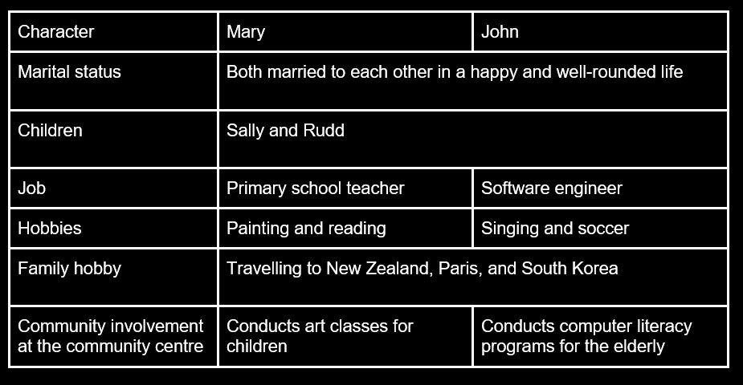

Know how putting the important points in a tabular method helps with memorising.
Mary and John are a married couple who lead active and fulfilling lives. Mary works as a teacher at a primary school, while John is a software engineer. They have two children, Sally and Rudd. In their free time, Mary enjoys painting and reading, while John is passionate about singing and soccer. As a family, they love travelling and exploring new places. They have visited several countries, including New Zealand, France, and South Korea. They also enjoy volunteering at their community centre, where Mary conducts art classes for children, and John conducts computer literacy programs for the elderly. Overall, Mary and John have a happy and well-rounded life together.
Refer to the table below, we can learn the information in this passage effectively.
Categorise common points of analysis (such as hobby) that are either similar or different across the different aspects which is the character in this case.
Click "Next" to take a 10 minute break and come back to answer a few more questions to test your memory!